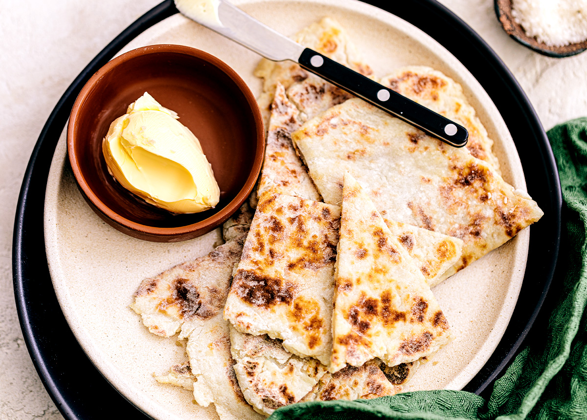

Three Ingredient Flat Bread

An amazing packet of potatoey starchy goodness.
Ingredients
- 450g Starchy Potatoes, peeled
- 150g plain flour
- salt
- butter for serving
Instructions
- Boil the potatoes until very soft.
- mash the potatoes until very smooth
- place the flour onto a chopping board forming a well. put the potatoes and some salt into said well. knead to dough
- cut the dough into quarters
- form each into a ball, and use a rolling pin to spread each into a circle about 1.5cm thick
- using a cast iron pan on medium heat, cook each circle untill golden brown and delicious on each side, about two minutes a side.